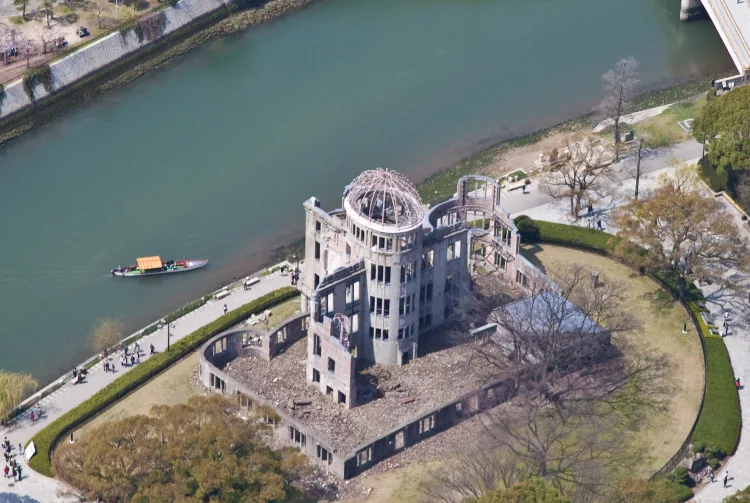
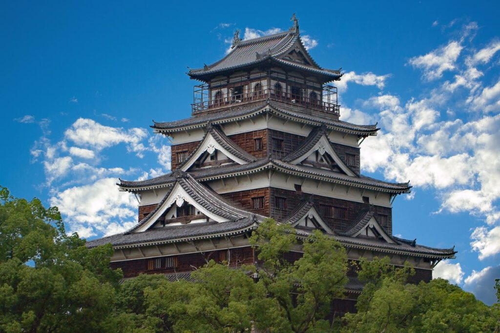
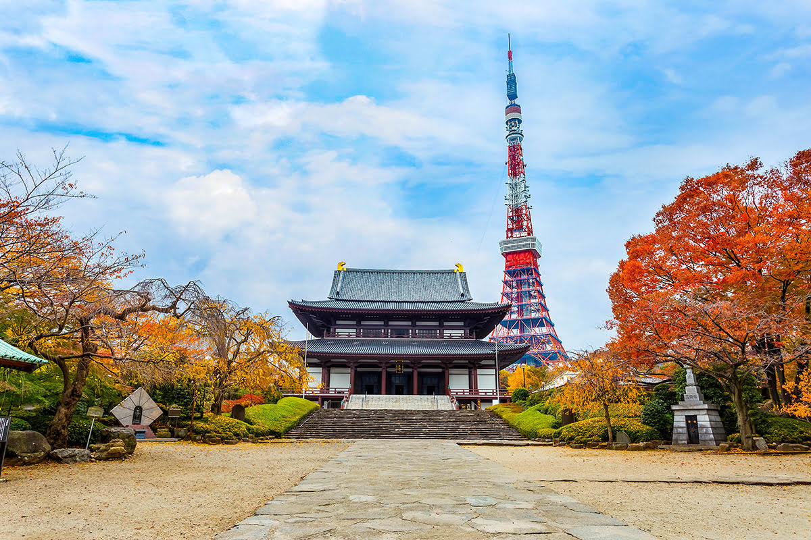
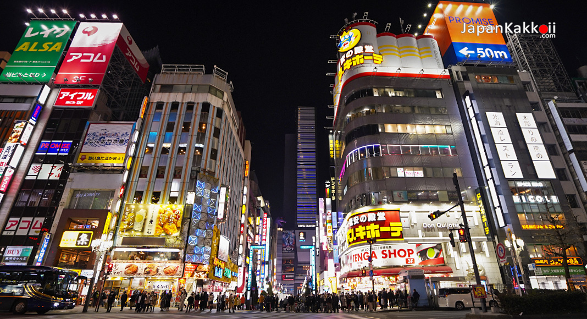

TRAVEL
Explore Japan's cities, from quiet shrines to bustling cities, where tradition and modernity meet
ญี่ปุ่นเป็นประเทศที่เต็มไปด้วยวัฒนธรรมที่หลากหลายและมีสถานที่ท่องเที่ยวที่น่าสนใจมากมาย ไม่ว่าคุณจะเป็นคนที่รักในธรรมชาติ ชื่นชอบในประวัติศาสตร์ หรือเป็นคนที่อยากสัมผัสกับเทคโนโลยีสมัยใหม่ ญี่ปุ่นมีทุกอย่างที่คุณต้องการ ในบทความนี้ ฉันจะพาคุณไปสำรวจแหล่งท่องเที่ยวที่ฉันใฝ่ฝันอยากไปสัมผัสด้วยตัวเอง หวังว่ามันจะสร้างแรงบันดาลใจให้กับคุณในการวางแผนการเดินทางครั้งต่อไปของคุณ!
1.สวนสันติภาพฮิโรชิม่า Hiroshima Peace Memorial Park
ภาพจาก : https://www.japan.travel/
สวนนี้สร้างขึ้นเพื่อรำลึกถึงเหตุการณ์การทิ้งระเบิดปรมาณูในปี 1945 ภายในสวนมีอนุสรณ์สถานสันติภาพและพิพิธภัณฑ์ที่เล่าเรื่องราวเกี่ยวกับเหตุการณ์ดังกล่าว นอกจากนี้ยังมี Genbaku Dome ที่เป็นสิ่งก่อสร้างที่เหลือรอดจากการระเบิดและได้รับการยกย่องเป็นมรดกโลกโดย UNESCO
2.ปราสาทฮิโรชิม่า (Hiroshima Castle)
ภาพจาก : https://www.seeyoujp.com/
ปราสาทฮิโรชิม่า (Hiroshima Castle) เป็นหนึ่งในสถานที่ท่องเที่ยวที่สำคัญและมีความหมายทางประวัติศาสตร์ของเมืองฮิโรชิม่า ตัวปราสาทนี้สร้างขึ้นในปี 1589 โดยโมริ เทรูโมโตะ (Mori Terumoto) หนึ่งในไดเมียวที่ทรงอิทธิพลในยุคเซ็นโกกุ ปราสาทฮิโรชิม่านับเป็นหนึ่งในปราสาทที่สำคัญของญี่ปุ่นในสมัยนั้น
3.โตเกียวทาวเวอร์ (Tokyo Tower)
ภาพจาก : https://www.fun-japan.jp/
โตเกียวทาวเวอร์เป็นสัญลักษณ์ของโตเกียวที่โดดเด่น ด้วยความสูง 333 เมตร คุณสามารถขึ้นไปยังจุดชมวิวเพื่อชมวิวทิวทัศน์ของเมืองที่สวยงาม โดยเฉพาะในเวลากลางคืนที่แสงไฟจากตัวเมืองจะทำให้เห็นโตเกียวในมุมที่น่าประทับใจ
4.อากิฮาบาระ (Akihabara)
ภาพจาก : https://www.gotokyo.org/
อากิฮาบาระเป็นย่านที่เป็นที่รู้จักกันดีในฐานะศูนย์กลางของวัฒนธรรมอนิเมะ มังงะ และเกม ที่นี่มีร้านขายอุปกรณ์อิเล็กทรอนิกส์และสินค้าเกี่ยวกับอนิเมะมากมาย เป็นสวรรค์ของคนรักเทคโนโลยีและนักสะสมสินค้าอนิเมะ โตเกียวเป็นเมืองที่มีเสน่ห์และความหลากหลายที่ไม่สิ้นสุด ไม่ว่าจะสนใจในประวัติศาสตร์ วัฒนธรรม หรือความทันสมัย โตเกียวก็มีทุกอย่างที่ต้องการ
5.ย่านชินจูกุ (Shinjuku)
ภาพจาก : https://www.japankakkoii.com/
ชินจูกุเป็นย่านที่เต็มไปด้วยชีวิตชีวาและแสงสี มีทั้งห้างสรรพสินค้า ร้านอาหาร สถานบันเทิง และที่ทำการเมืองโตเกียว (Tokyo Metropolitan Government Building) ซึ่งสามารถขึ้นไปชมวิวเมืองได้ฟรี นอกจากนี้ยังมีสวนชินจูกุเกียวเอ็น (Shinjuku Gyoen) ที่เป็นสวนสาธารณะที่สวยงาม เหมาะสำหรับการพักผ่อน